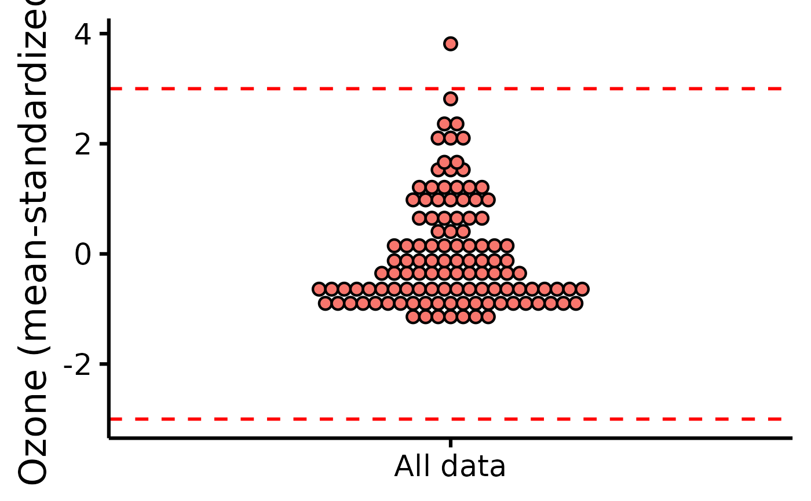

Easily and visually check outliers through a dot plot with accompanying reference lines at +/- 3 MAD or SD. When providing a group, data are group-mean centered and standardized (based on MAD or SD); if no group is provided, data are simply standardized.
Usage
plot_outliers(
data,
group = NULL,
response,
method = "mad",
criteria = 3,
colours,
xlabels = NULL,
ytitle = NULL,
xtitle = NULL,
has.ylabels = TRUE,
has.xlabels = TRUE,
ymin,
ymax,
yby = 1,
...
)Arguments
- data
The data frame.
- group
The group by which to plot the variable.
- response
The dependent variable to be plotted.
- method
Method to identify outliers, either (e.g., 3) median absolute deviations ("mad", default) or standard deviations ("sd").
- criteria
How many MADs (or standard deviations) to use as threshold (default is 3).
- colours
Desired colours for the plot, if desired.
- xlabels
The individual group labels on the x-axis.
- ytitle
An optional y-axis label, if desired.
- xtitle
An optional x-axis label, if desired.
- has.ylabels
Logical, whether the x-axis should have labels or not.
- has.xlabels
Logical, whether the y-axis should have labels or not.
- ymin
The minimum score on the y-axis scale.
- ymax
The maximum score on the y-axis scale.
- yby
How much to increase on each "tick" on the y-axis scale.
- ...
Other arguments passed to ggplot2::geom_dotplot.
See also
Other functions useful in assumption testing: Tutorial: https://rempsyc.remi-theriault.com/articles/assumptions
Examples
# Make the basic plot
plot_outliers(
airquality,
group = "Month",
response = "Ozone"
)
#> Bin width defaults to 1/30 of the range of the data. Pick better value with
#> `binwidth`.
#> Warning: Removed 37 rows containing missing values or values outside the scale range
#> (`stat_bindot()`).
plot_outliers(
airquality,
response = "Ozone",
method = "sd"
)
#> Bin width defaults to 1/30 of the range of the data. Pick better value with
#> `binwidth`.
#> Warning: Removed 37 rows containing missing values or values outside the scale range
#> (`stat_bindot()`).
